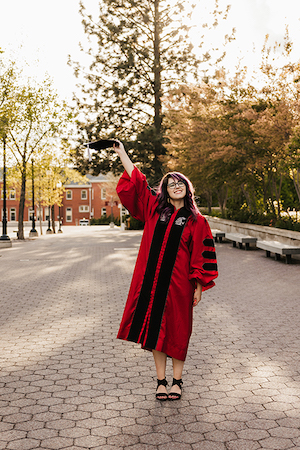
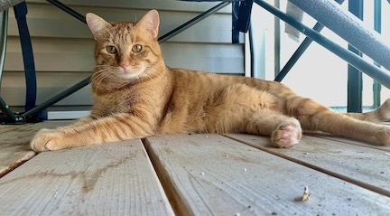

About
Hello! My name is Sarah and I am currently working as a Physical Scientist for the USGS New England Water Science Center. I received my Ph.D. from Washington State University, where my dissertation focused on the interaction between clouds and surface radiation over first-year sea ice in both model output and observations. I also provide technical support, editing, and client training for scientific conferences through The Conference Exchange (Confex).
I grew up in central Maine and currently live in eastern Washington with my cat, Flame. I collect houseplants and like taking pictures in my free time.
In 2020 I was awarded a Department of Energy Office of Science Graduate Student Research fellowship, allowing me to conduct some of my doctoral research with scientists at the Pacific Northwest National Laboratory.

WSU doctoral student heading to PNNL thanks to prestigious Department of Energy award
Sarah Murphy’s Path Leads to PNNL for ASR-Focused Research
Additionally, I have been involved in a few field experiments, including:
- 2015 to 2023 - The Norwegian Young Sea Ice (NICE) field experiment doing data analysis and model testing with data collected during the field experiment. I was not present for the field experiment, but my Ph.D. dissertation is focused on the analysis and testing of data collected during this field experiment.
- 2015 & 2017 - The Integrated Characterization of Energy, Atmospheric state, Clouds, and Precipitation at Summit (ICECAPS) field experiment by visiting Summit Station, Greenland once in 2015 and again in 2017 to assist with instrument calibration and testing.
- 2015 - The Plains Elevated Convection at Night (PECAN) field experiment, setting up equipment (mesonet trucks, tornado pods, and doppler on wheels radar trucks) during intensive observing periods (IOP) and doing quality assurance between IOP deployments.
